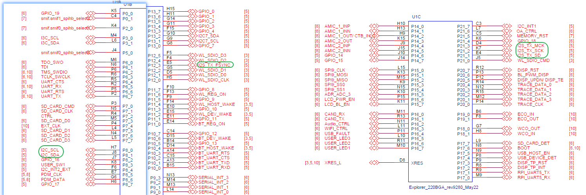

Edgi-Talk_WavPlayer Example Project
中文 | English
Introduction
This example project demonstrates WAV audio playback on the M33 core with RT-Thread RTOS. It allows users to experience WAV file parsing, playback mechanism, and verify audio decoding and driver interfaces.
Hardware Overview
ES8388 Connection

Speaker Interface

Control Pins

BTB Socket

MCU Interface

Physical Board Layout

Software Description
Developed on Edgi-Talk platform.
Example features:
WAV file parsing and playback
Audio output via onboard DAC or audio peripherals
Supports PCM16 WAV files
Sample rates: 16 kHz, 24 kHz, 48 kHz
Stereo output
Playback status printed to serial console
Provides a clear example of audio playback driver integration with RT-Thread filesystem.
Usage
Build and Download
Open and compile the project.
Connect the board USB to PC via DAP.
Flash the compiled firmware.
Copy WAV files to SD card or external storage root directory, e.g.,
16000.wav.
Running Result
After power-on, the system initializes I2C, I2S audio devices, and mounts storage.
Start playback via serial terminal:
wavplay -s 16000.wav
Sample serial output:
\ | /
- RT - Thread Operating System
/ | \ 5.0.2 build Sep 8 2025 11:21:16
2006 - 2022 Copyright by RT-Thread team
[I/I2C] I2C bus [i2c0] registered
[I/i2s] ES8388 init success.
[I/drv.mic] audio pdm registered.
[I/drv.mic] !!!Note: pdm depends on i2s0, they share clock.
found part[0], begin: 1048576, size: 29.739GB
Hello RT-Thread
This core is cortex-m33
msh />wavplay -s 16000.wav
[D/WAV_PLAYER] EVENT:PLAYSTOPPAUSERESUME, STATE:STOPPED -> PLAYING
[D/WAV_PLAYER] open wavplayer, device sound0
[D/WAV_PLAYER] Information:
[D/WAV_PLAYER] samplerate 16000
[D/WAV_PLAYER] channels 2
[D/WAV_PLAYER] sample bits width 16
[I/WAV_PLAYER] play start, uri=16000.wav
[I/i2s] Ready for I2S output
msh />
Playback status, sample rate, channels, and bit width are displayed on the serial console.
Notes
WAV files must be PCM16 format, 16 kHz, 24 kHz, or 48 kHz, stereo output.
To modify graphical configuration:
tools/device-configurator/device-configurator.exe
libs/TARGET_APP_KIT_PSE84_EVAL_EPC2/config/design.modus
Save changes and regenerate code.
Ensure storage is properly inserted and mounted, otherwise playback will fail.
Startup Sequence
+------------------+
| Secure M33 |
| (Secure Core) |
+------------------+
|
v
+------------------+
| M33 |
| (Non-Secure Core)|
+------------------+
|
v
+-------------------+
| M55 |
| (Application Core)|
+-------------------+
⚠️ Flash in this order strictly.
If the example does not run, first compile and flash Edgi-Talk_M33_S_Template.
To enable M55:
RT-Thread Settings --> Hardware --> select SOC Multi Core Mode --> Enable CM55 Core